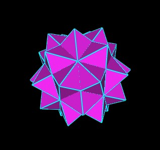
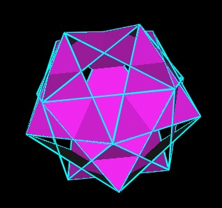
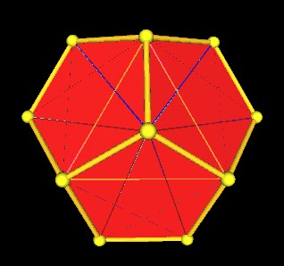
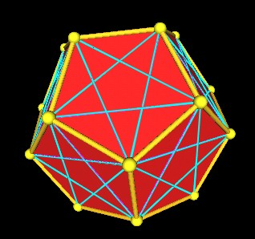
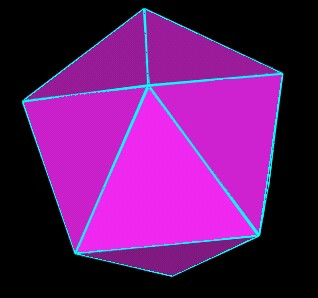
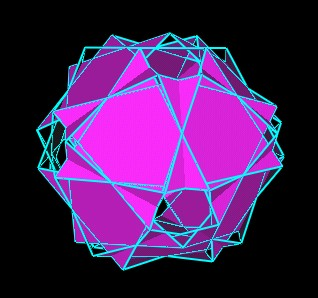
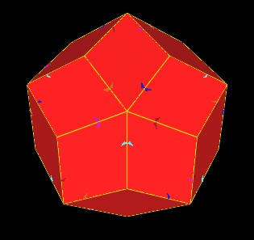
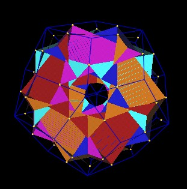
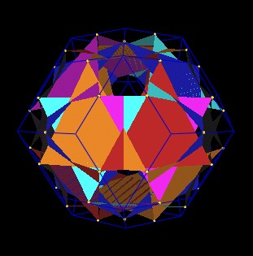
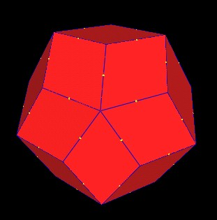

The Jitterbug motion can define all the polyhedra we are investigating. Each of the 4 Octahedra may be considered to be a Jitterbug. (See the article "What's in this polyhedron?" for further explaination and animations.)
Here are 5 Jitterbugs corresponding to the 5 Octahedra in the 120 Polyhedron.
|  | 5 Intersecting Jitterbugs. |
This means that the edge length of the Jitterbugs is the same as the edge lengths of the of the Octahedra.
When the Jitterbug triangles rotate, they will pass through a position which defines a regular Dodecahedron.
|  | 5 Jitterbugs define a regular Dodecahedron. |
|  |  | 5 Jitterbugs define a regular Dodecahedron. |
Using the (x, y, z) coordinates given in the article "What's in this polyhedron?" for all the 120 Polyhedron' vertices, the edge length of an Octahedron (Jitterbug) is
where p = Golden Mean = (1 + sqrt(5))/2.
From the pictures we see that these edges go across the pentagon faces of the Dodecahedron.
For the Dodecahedron in the 120 Polyhedron, this cross-face distance is 2p^2. So, we would need to increase the regular Dodecahedron in the 120 Polyhedron by a factor of sqrt(2) to match this Jitterbug defined Dodecahedron.
We also know that the 5 Jitterbugs also open into an Icosahedron.
|  | 5 Jitterbugs define an Icosahedron. |
The Icosahedron's edge length in the 120 Polyhedron is 2p^2. So we get the same scale factor of sqrt(2).
The 5 Jitterbugs can rotate and radially expand their triangles into a position which defines a truncated rhombic Triacontahedron.
|  | 5 Jitterbugs |
5 Jitterbugs in truncated rhombic Triacontahedron position. |
Here I have made the Triacontahedron just a little bit smaller than it should be so that the Jutterbug vertices can be seen along the rhombic Triacontahedron's edges.
|  | Jitterbugs define trunctated Triacontahedron. |
This is similar to the case of the 5 Octahedra defining a truncated rhombic Dodecahedron. See this web page.
However, upon further investigation, it is found that the Jitterbug vertices move along the edges of the rhombic Triacontahedron, changing their radius as they move.
So the intersection of the Jitterbug vertices and the edges of the rhombic Triacontahedron is not one unique position. The maximum radial distance seems to occur when the Jitterbug vertices are at the mid-edge points of the rhombic Triacontahedron. So I will pick that position for calculating a scale factor.
|  |
Jitterbugs vertices at mid edge points of rhombic Triacontahedron. |
|  |
Jitterbugs vertices at mid edge points of rhombic Triacontahedron. |
|  |
Jitterbugs vertices at mid edge points of rhombic Triacontahedron. |
The scale factor appears to be 1.63299, but exact calculations will need to be done.
Usage Note: My work is copyrighted. You may use my work but you may not include my work, or parts of it, in any for-profit project without my consent.